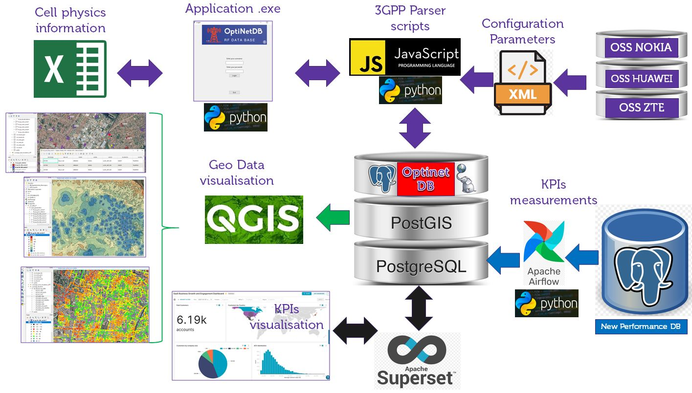

🏆 Proyecto Destacado

OptiNetDB - Plataforma de Optimización de Redes
Plataforma centralizada para almacenamiento de KPIs RF, parámetros multi-vendor (Nokia/Huawei/ZTE), simulaciones de cobertura y datos de Drive Test. Incluye visualización geoespacial y dashboards en Apache Superset.
Monitoreo histórico de KPIs
Visualización GIS integrada